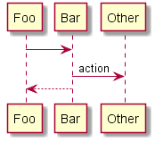

Документация Диадок API¶

Диадок – это система обмена юридически-значимыми электронными документами между организациями. Диадок позволяет компаниям обмениваться со своими клиентами, поставщиками, партнерами, удаленными подразделениями любыми документами.
Базовым уровнем интеграции с Диадоком является его HTTP-API интерфейс. Этот уровень являетсся наиболее общим, и на нем, в частности, обеспечивается платформо-независимость для интеграционных решений.
Это значит, что с HTTP-API могут работать как клиенты, написанные на языке C# под платформу .NET и запускающиеся на машинах с ОС Microsoft Windows, так и клиенты, написанные на Java или C++, запускающиеся на машинах под управлением ОС Linux.
Для разработчиков, занимающихся интеграцией Диадока с различными программными продкутами, построенными на платформе 1С, доступен специальный внешний компонент, который позволяет максимально быстро решать типовые задачи, возникающие при стыковке 1С-решений с Диадоком.
Этот компонент написан на языке C++ и не содержит лишних зависимостей, что позволяет использовать его на любой Windows-системе, не требуя установки каких-либо дополнительных модулей.
Общее описание возможностей¶
Примеры использования¶
Техническая документация¶
Справочное руководство
История изменений¶